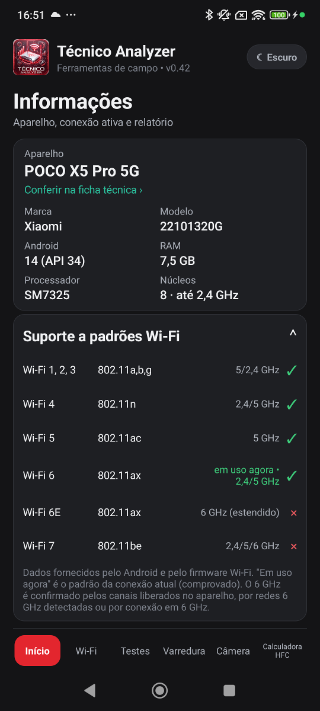
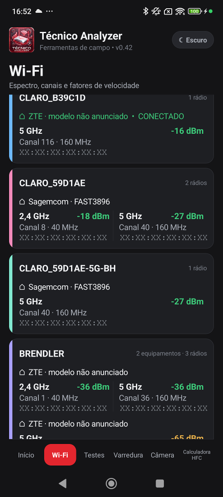
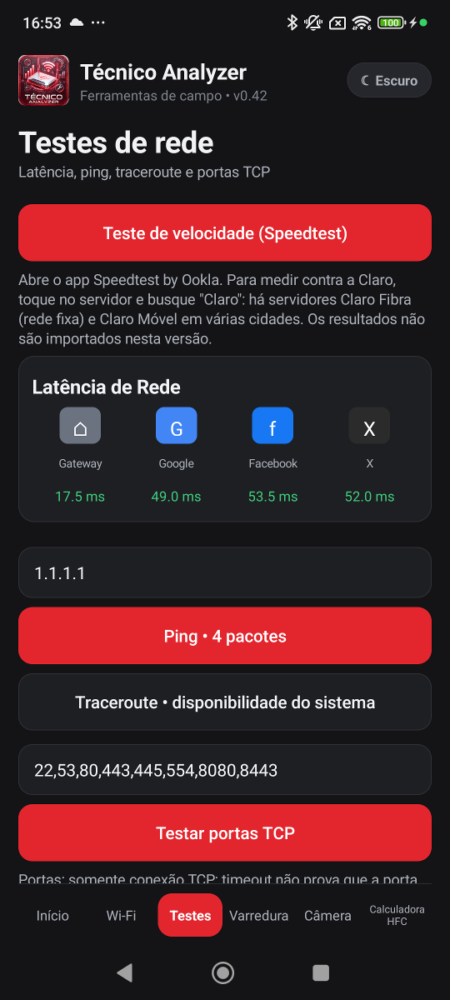
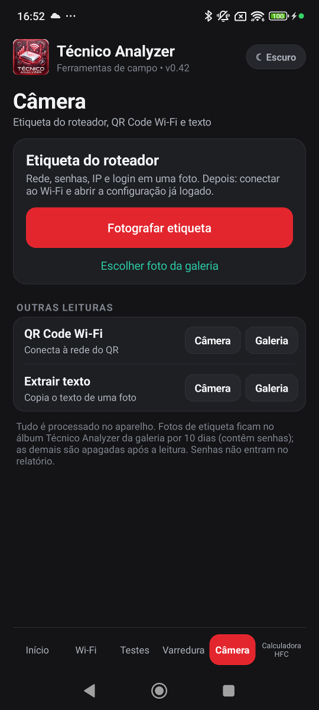
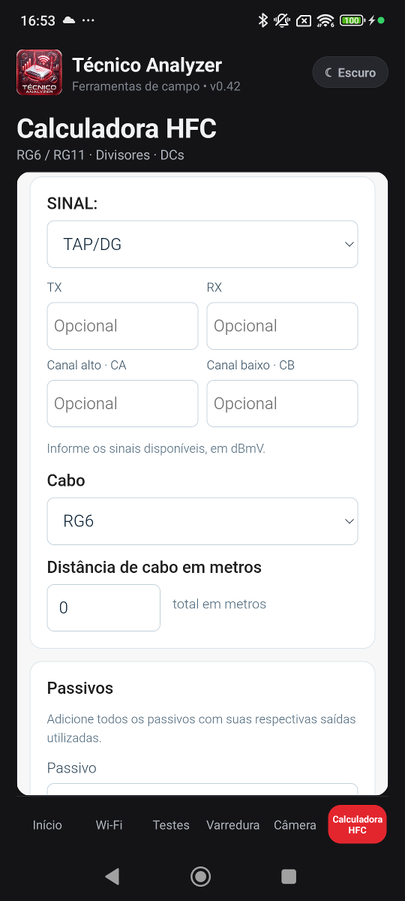

Técnico Analyzer
Ferramentas de campo para técnicos de instalação e manutenção
Telas






Como instalar
- Toque em Baixar para Android e abra o arquivo baixado.
- Se o Android pedir, permita instalar apps desta fonte (navegador ou gerenciador de arquivos).
- Toque em Instalar.
- Se o Google Play Protect avisar que o app não foi analisado, toque em Enviar para verificação (gratuito) ou, em Mais detalhes, instale sem verificar. O aviso aparece porque o app não vem da Play Store.
A partir da 0.41 o próprio app avisa quando há versão nova: toque em Atualizar e, só na primeira vez, ative Permitir desta fonte para o Técnico Analyzer.
Tinha uma versão de teste?
Versões instaladas antes desta página (enviadas por cabo ou por arquivo) têm outra assinatura. Desinstale a antiga uma vez e instale esta.
O que o app faz
- Etiqueta do roteador: uma foto lê rede, senhas, IP e login; conecta ao Wi-Fi e abre a configuração já preenchida.
- Wi-Fi: espectro com cor por rede, modem e mesh separados com fabricante e modelo, canais e padrões suportados pelo aparelho (Wi-Fi 4 a 7).
- Testes: velocidade (Brasil Banda Larga e servidor Claro dentro do app), latência, ping, traceroute, portas TCP/UDP e gerador de tráfego.
- Varredura: dispositivos da rede local e sinal Wi-Fi por cômodo.
- Calculadora HFC: RG6/RG11, divisores e DCs, sem internet.
Novidades da 0.47
- Speedtest CLI Android: Florianópolis-SC agora tem três servidores — Claro Fibra - FLN (16338), Claro Móvel - FLN2 (21732) e PoP-SC/RNP (1201).
Na 0.46
- Band steering: bandas 2,4 GHz e 5 GHz do mesmo SSID lado a lado, com a conectada marcada, o delta e um veredito.
- Trocas de banda: histórico da sessão com horário e sinal de cada troca.
- Celular: botões e fontes ajustados para três ações caberem na mesma linha.
Na 0.45
- Speedtest CLI Android: latência, download e upload contra o servidor Claro da cidade, dentro do app.
- Brasil Banda Larga (medidor oficial EAQ/Anatel) dentro do app.
- Portas TCP/UDP em paralelo e gerador de tráfego por porta.
- Sinal por cômodo e RSSI na câmera (AR), na aba Varredura.
Na 0.43
- Latência de Rede: escolha IPv4 ou IPv6 e veja o IP medido de cada destino.
- PING -t: ping contínuo até tocar em Parar, com perda e tempos mín/méd/máx.
Privacidade
Leitura de etiquetas e QR Codes feita no próprio aparelho. Senhas não entram no relatório. Fotos de etiqueta ficam na galeria (álbum Técnico Analyzer) e são apagadas automaticamente após 10 dias.